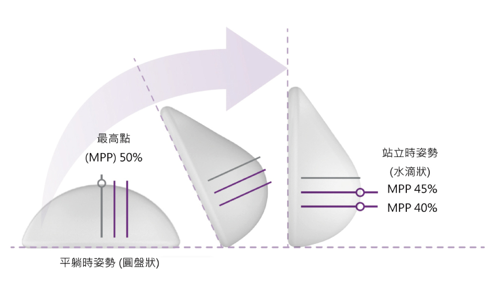
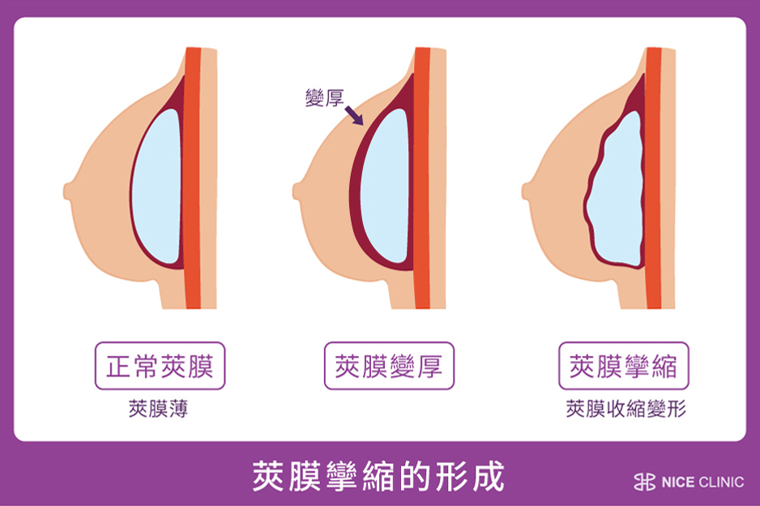

首頁 > 醫美新知 >不要選擇Motiva魔滴隆乳，除非你看過這篇文章!
不要選擇Motiva魔滴隆乳！！
除非你看過這篇文章
近一年來只要談論到隆乳話題，絕對少不了魔滴，motiva魔滴隆乳就像隆乳界的明星一樣!不論自然度、外觀美麗程度絕對是一等一的!也有近半永久的保固，沒理由不選擇魔滴隆乳，但真的不要選擇motiva魔滴隆乳有甚麼原因!?還有魔滴跟他牌假體到底有差別，就讓小編來報給你知
Motiva魔滴與其他義乳比較
大家一定很好奇Motiva魔滴隆乳為何會這麼有名!通常義乳分圓盤型及水滴型!Motiva魔滴隆乳之所以這麼厲害為那是因為Motiva魔滴隆乳中的ProgressiveGel Ultima™ 4D流動膠體技術，具高延展性與流變性能，視覺上同時兼具圓盤型及水滴型的優點!而避免掉圓盤型較為自然，但可能無法像水滴型這麼漂亮，而水滴型雖然站著時很漂亮但躺下時無法自然外擴這些缺點。
Motiva魔滴可依據身體姿勢不同，呈現如真實胸部一樣的樣貌。躺著時胸部渾圓飽滿並微微向外擴散，站著時呈現自然水滴狀。同時可以避免邊緣明顯的問題；觸覺上兼顧Ｑ彈與擬真的柔軟度。這是通常圓盤型、水滴型義乳無法做到的!
Motiva魔滴隆乳但也有缺點？
是的!Motiva魔滴雖然能夠這麼自然呈現胸型但還是有一些小缺點，還有一些不適用的對象!這裡小編就幫大家分析一下缺點吧!
1. 柔軟度不如光滑面義乳﹝較Q彈﹞，因為是100%無空隙填充。
>>最新隆乳材質-柔滴 | 觸感宛如真乃
2. 因具多項專利並提供10年保固，致費用較高! 一般隆乳或約在15-20萬 而Motiva魔滴會在32萬起!
3. 柔軟度近似光滑面義乳，所以也有光滑面義乳可能導致「術後乳下緣下滑」的問題，惟其發生率遠較光滑面義乳為低。
如果有以下條件情況也不建議使用Motiva魔滴隆乳!
1. 未滿22歲不適合魔滴隆乳手術。
2. 仍在懷孕或哺乳期的女性不適合魔滴隆乳手術。
3. 心理準備不足或過度期望的人不適合魔滴隆乳手術。
4. 乳房皮膚或乳腺有發炎狀況者不適合魔滴隆乳手術。
再來講講最常見的魔滴隆乳後遺症與缺點吧!
因為手術過程中須在人體乳房處，植入一定大小的義乳，約100至300c.c（需視每個人選的義乳大小而定），術後三天可能會有較不舒服狀態，醫師會給予止痛藥，當你疼痛時可適時食用。
術後約有3%的機率發生發生肥厚性疤痕，患者可經過皮秒雷射治療處理
莢膜攣縮分為4個等級，該如何檢視？其實主要就是透過乳房的觸感、外觀自然度來判斷，但魔滴義乳發生莢膜攣生率極低(小於1%)。
約有15%的患者，會發生乳頭異常且麻痺的併發症，一般半年皆可恢復。
可以利用束胸袋微調，也可防止隆乳後義乳上移。
其原因可能為莢膜攣縮、手術器械損傷、強烈擠壓等，而魔滴官方保固五年，若發生莢膜攣縮或植入物破裂，只要在台灣認證診所做手術即可向原廠申請理賠。
有少數患者在手術過後會出現乳液分泌現象，須移除植入物才可根治，因植入物刺激乳腺神經導致泌乳。
魔滴隆乳只要你在原廠認證診所做手術就給您5年的原廠保固，保固期間若是發生義乳破裂或嚴重的莢膜攣縮情況，魔滴原廠除了提供新的植入外，還會提供重建隆乳手術費用。
接著就是大家最也很關注的議題! 隆乳可以做多大?如何預防硬化!?
其實隆乳能夠做多大在於你的胸廓有多少空間!利用胸廓的寬度來選擇適合的尺寸cc數，如果胸廓太小卻選擇太大的尺寸，胸部會超過胸廓的寬度，胸型明顯的向內或向外擴:向內乳溝邊緣會太接近，向外接近肋骨邊緣，手臂內側也容易觸碰到，比例上會顯得比較不自然!
建議隆乳前先與醫師討論自己理想的罩杯，以適合自己的胸廓大小的cc術去做選擇，才不會有不自然的狀況
目前Motiva魔滴隆乳有四種型號可以做選擇依序是:mini、demi、full、corse供選擇!
接著講大家也很擔心的魔滴硬化怎麽辦？莢膜攣縮魔滴機率高嗎？
我們必須先了解莢膜攣縮魔滴形成的原因!
1. 手術的時候出血過多
莢膜攣縮魔滴最主要的原因，是在手術的時候出血過多，並不是放置引流管就能控制止血，通常是因為出血多，為了監控所以放置引流管。
2. 生物包膜
莢膜攣縮魔滴的原因就是所謂的亞臨床感染，或稱生物包膜（Biofilm）例如選擇乳暈切口隆乳，經過乳腺組織時，這個時候會有許多表面的細菌來粘附在我們的假體上面，形成所謂的生物包膜 Biofilm，如果細菌因為身體免疫力下降時，攣縮情形就會變得明顯，胸部變得越來越硬，也就是魔滴硬化。
以上就是會造成魔滴會硬化的原因!魔滴硬化或是莢膜攣縮魔滴機率率在國外的文獻報導是小於1%，所以重點在於預防魔滴硬化小編會建議大家選擇有經驗的醫師做好所有事情作業是非常非常重要的!